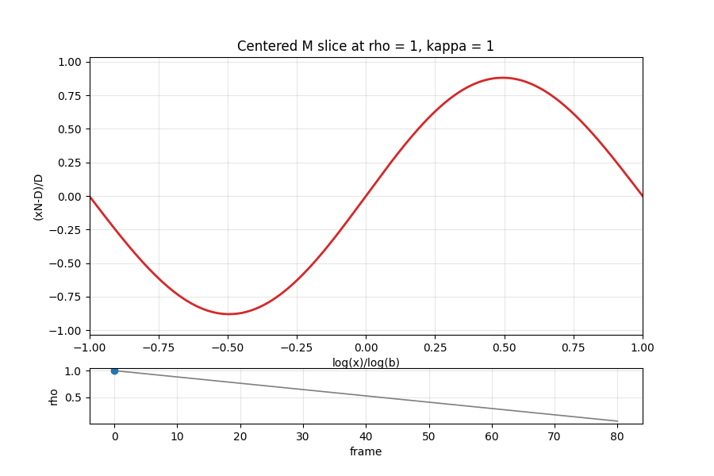

Scientific computing · Arbitrary precision · C++
Making near-zero numerical structure visible.
A numerical research workspace for studying the Brownian Boost / ABMN functions when the quantity of interest, M(x) − 1, can be smaller than ordinary floating-point noise.
Research in progress: the computational pipeline now resolves and certifies extremely small centered values across parameter sweeps. Current extremum and monotonicity patterns remain empirical hypotheses, not proved results.
10,201points in an
Arb interval sweep
Arb interval sweep
441/441magnitude points meeting
the truncation criterion
the truncation criterion
10−23smallest observed
|M − 1| scale
|M − 1| scale
7–98adaptive series
depth range
depth range
The numerical problem
The signal can hide inside the arithmetic.
The experiments evaluate an iterated-series representation of M(x; κ, ρ) and study a maximum derived from it. In important regions, M is almost exactly 1—so subtracting 1 after a long computation can destroy the digits that decide magnitude or sign.
h(x; κ, ρ) = M(x; κ, ρ) − 1
A plausible-looking float is not enough. The code must distinguish a genuine value near zero from truncation error, root-finder failure, endpoint drift, and cancellation introduced by the representation itself.
Engineering approach
Explore quickly. Recompute carefully. Track the error.
The workspace maintains several numerical paths because speed, range, precision, and rigorous enclosures serve different roles.
Double
Fast C++ sweeps expose geometry and failure modes before expensive high-precision runs.
MPFR
A configurable-precision implementation resolves centered values beyond float64 and supports large threaded sweeps.
Arb
Interval arithmetic carries enclosures through the computation and records output radii.
Truncation
Tail bounds determine adaptive series depth rather than relying on one fixed cutoff.
Safeguards
Explicit bracketing, NaN-on-failure, centered evaluation, and endpoint pinning prevent silent numerical success.
Scale
OpenMP and Savio cluster scripts parallelize parameter grids while keeping per-point diagnostics.
Existing evidence
Eighteen orders of magnitude in one sweep.
A current MPFR sweep over (κ, ρ) ∈ [0.5, 1]² contains 441 points. Every recorded point met its truncation criterion, with adaptive depth increasing from 7 to 98 terms as needed.

Observed centered magnitude
|M − 1| at the selected x evaluation
5.2 × 10−232.46 × 10−5
These are descriptive statistics from the current development datasets. See the curated summary and research workspace.
What comes next
Turn patterns into claims.
The pipeline is now capable enough to support sharper experiments. The next draft should promote only results that survive cross-method checks and preserve their full run configuration.
Canonical run
Freeze one parameter domain, precision, tolerance, and code revision as a named, reproducible dataset.
Cross-check
Compare selected MPFR points against rigorous Arb intervals and quantify agreement and runtime cost.
Test hypotheses
Design targeted sweeps for the proposed extremum location and monotone truncation behavior before presenting either as a result.